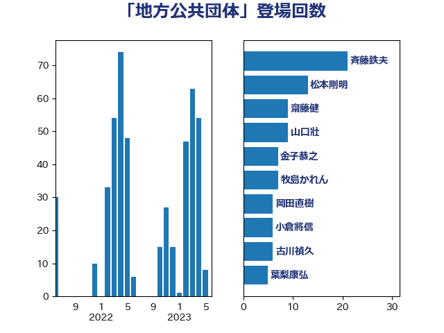

単語「地方公共団体」

| 斉藤鉄夫 | 公明党 | 21 回 |
| 松本剛明 | 自由民主党 | 13 回 |
| 齋藤健 | 自由民主党 | 9 回 |
| 山口壯 | 自由民主党 | 9 回 |
| 金子恭之 | 自由民主党 | 7 回 |
| 牧島かれん | 自由民主党 | 7 回 |
| 岡田直樹 | 自由民主党 | 6 回 |
| 小倉將信 | 自由民主党 | 6 回 |
| 古川禎久 | 自由民主党 | 6 回 |
| 葉梨康弘 | 自由民主党 | 5 回 |
| 末松信介 | 自由民主党 | 5 回 |
| 加藤勝信 | 自由民主党 | 5 回 |
| 高木かおり | 日本維新の会 | 4 回 |
| 野村哲郎 | 自由民主党 | 4 回 |
| 芳賀道也 | 国民民主党 | 4 回 |
| 新藤義孝 | 自由民主党 | 4 回 |
| 後藤茂之 | 自由民主党 | 4 回 |
| 宮本岳志 | 日本共産党 | 4 回 |
| 中川貴元 | 自由民主党 | 4 回 |
| 鬼木誠 | 立憲民主党 | 3 回 |
| 青木愛 | 立憲民主党 | 3 回 |
| 野田聖子 | 自由民主党 | 3 回 |
| 西村明宏 | 自由民主党 | 3 回 |
| 田嶋要 | 立憲民主党 | 3 回 |
| 河野太郎 | 自由民主党 | 3 回 |
| 尾崎正直 | 自由民主党 | 3 回 |
| 小沢雅仁 | 立憲民主党 | 3 回 |
| 小宮山泰子 | 立憲民主党 | 3 回 |
| 吉川元 | 立憲民主党 | 3 回 |
| 伊藤岳 | 日本共産党 | 3 回 |
| おおつき紅葉 | 立憲民主党 | 3 回 |
| 高鳥修一 | 自由民主党 | 2 回 |
| 高橋千鶴子 | 日本共産党 | 2 回 |
| 鈴木庸介 | 立憲民主党 | 2 回 |
| 道下大樹 | 立憲民主党 | 2 回 |
| 進藤金日子 | 自由民主党 | 2 回 |
| 輿水恵一 | 公明党 | 2 回 |
| 赤池誠章 | 自由民主党 | 2 回 |
| 若宮健嗣 | 自由民主党 | 2 回 |
| 石原宏高 | 自由民主党 | 2 回 |
| 田畑裕明 | 自由民主党 | 2 回 |
| 片山さつき | 自由民主党 | 2 回 |
| 熊谷裕人 | 立憲民主党 | 2 回 |
| 浅野哲 | 国民民主党 | 2 回 |
| 池下卓 | 日本維新の会 | 2 回 |
| 武部新 | 自由民主党 | 2 回 |
| 柳本顕 | 自由民主党 | 2 回 |
| 松野博一 | 自由民主党 | 2 回 |
| 本田顕子 | 自由民主党 | 2 回 |
| 徳永エリ | 立憲民主党 | 2 回 |
| 庄子賢一 | 公明党 | 2 回 |
| 岸田文雄 | 自由民主党 | 2 回 |
| 山谷えり子 | 自由民主党 | 2 回 |
| 尾身朝子 | 自由民主党 | 2 回 |
| 寺田稔 | 自由民主党 | 2 回 |
| 安江伸夫 | 公明党 | 2 回 |
| 堀井巌 | 自由民主党 | 2 回 |
| 国定勇人 | 自由民主党 | 2 回 |
| 加藤鮎子 | 自由民主党 | 2 回 |
| 中川康洋 | 公明党 | 2 回 |
| 中川宏昌 | 公明党 | 2 回 |
| 上田清司 | 国民民主党 | 2 回 |
| 鳩山二郎 | 自由民主党 | 1 回 |
| 青柳陽一郎 | 立憲民主党 | 1 回 |
| 阿部司 | 日本維新の会 | 1 回 |
| 鈴木義弘 | 国民民主党 | 1 回 |
| 鈴木俊一 | 自由民主党 | 1 回 |
| 金子俊平 | 自由民主党 | 1 回 |
| 里見隆治 | 公明党 | 1 回 |
| 谷川とむ | 自由民主党 | 1 回 |
| 谷合正明 | 公明党 | 1 回 |
| 西銘恒三郎 | 自由民主党 | 1 回 |
| 西岡秀子 | 国民民主党 | 1 回 |
| 舞立昇治 | 自由民主党 | 1 回 |
| 自見はなこ | 自由民主党 | 1 回 |
| 羽田次郎 | 立憲民主党 | 1 回 |
| 竹詰仁 | 国民民主党 | 1 回 |
| 福田昭夫 | 立憲民主党 | 1 回 |
| 福島みずほ | 社会民主党 | 1 回 |
| 石垣のりこ | 立憲民主党 | 1 回 |
| 石井苗子 | 日本維新の会 | 1 回 |
| 石井準一 | 自由民主党 | 1 回 |
| 白石洋一 | 立憲民主党 | 1 回 |
| 田村貴昭 | 日本共産党 | 1 回 |
| 田名部匡代 | 立憲民主党 | 1 回 |
| 田中昌史 | 自由民主党 | 1 回 |
| 猪瀬直樹 | 日本維新の会 | 1 回 |
| 牧野たかお | 自由民主党 | 1 回 |
| 熊田裕通 | 自由民主党 | 1 回 |
| 源馬謙太郎 | 立憲民主党 | 1 回 |
| 渡辺博道 | 自由民主党 | 1 回 |
| 渡辺創 | 立憲民主党 | 1 回 |
| 浜田靖一 | 自由民主党 | 1 回 |
| 津島淳 | 自由民主党 | 1 回 |
| 池畑浩太朗 | 日本維新の会 | 1 回 |
| 水野素子 | 立憲民主党 | 1 回 |
| 武田良太 | 自由民主党 | 1 回 |
| 橋本岳 | 自由民主党 | 1 回 |
| 横山信一 | 公明党 | 1 回 |
| 森屋隆 | 立憲民主党 | 1 回 |
| 杉久武 | 公明党 | 1 回 |
| 星野剛士 | 自由民主党 | 1 回 |
| 日下正喜 | 公明党 | 1 回 |
| 斎藤アレックス | 国民民主党 | 1 回 |
| 後藤祐一 | 立憲民主党 | 1 回 |
| 平沼正二郎 | 自由民主党 | 1 回 |
| 平山佐知子 | 無所属 | 1 回 |
| 岸真紀子 | 立憲民主党 | 1 回 |
| 岡本あき子 | 立憲民主党 | 1 回 |
| 山田宏 | 自由民主党 | 1 回 |
| 山田勝彦 | 立憲民主党 | 1 回 |
| 山本香苗 | 公明党 | 1 回 |
| 山本順三 | 自由民主党 | 1 回 |
| 山本博司 | 公明党 | 1 回 |
| 山本佐知子 | 自由民主党 | 1 回 |
| 山崎正恭 | 公明党 | 1 回 |
| 山口俊一 | 自由民主党 | 1 回 |
| 山下芳生 | 日本共産党 | 1 回 |
| 小野泰輔 | 日本維新の会 | 1 回 |
| 小林鷹之 | 自由民主党 | 1 回 |
| 宮路拓馬 | 自由民主党 | 1 回 |
| 守島正 | 日本維新の会 | 1 回 |
| 大口善徳 | 公明党 | 1 回 |
| 城井崇 | 立憲民主党 | 1 回 |
| 吉田統彦 | 立憲民主党 | 1 回 |
| 古川元久 | 国民民主党 | 1 回 |
| 古屋範子 | 公明党 | 1 回 |
| 加田裕之 | 自由民主党 | 1 回 |
| 保岡宏武 | 自由民主党 | 1 回 |
| 伊波洋一 | 無所属 | 1 回 |
| 中島克仁 | 立憲民主党 | 1 回 |
| 三浦靖 | 自由民主党 | 1 回 |
| 三木圭恵 | 日本維新の会 | 1 回 |
| あかま二郎 | 自由民主党 | 1 回 |